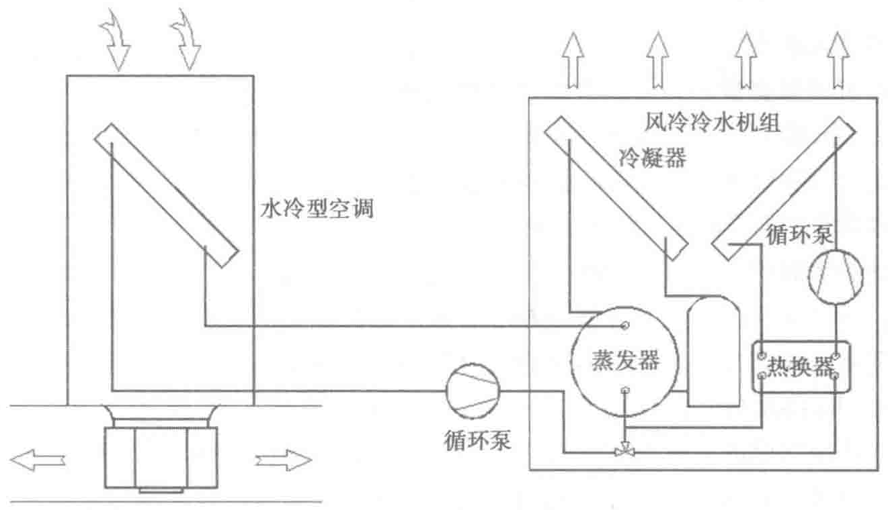

（1）冷冻侧载冷剂为水，冷却侧载冷剂为乙二醇
为实现自然冷却，机组将水－乙二醇换热器集成在机组内部，在寒冷季节换热时用乙二醇作为室外冷却侧载冷剂，以防止自然冷却器在极端环境下冻裂，并于机组内组集成乙二醇泵提供循环动力。机组控制系统根据环境温度和实际运行情况进行工作模式的切换。
所有的制冷循环集成于机组内，通过水泵将冷冻侧载冷剂水送到室内侧空调机组，空调机组采用冷冻水型精密空调（CW），仅作为末端空调装置，没有制冷系统，只具备空气调节功能。此种形式机组应用相对广泛。
典型的载冷剂为水时的自然冷却水冷空调设置如图4-9所示。

（2）冷冻侧和冷却侧载冷剂均为水或乙二醇
采用这种方式时，室内末端采用乙二醇形式的空调末端，冷水机组可以省掉水－乙二醇换热装置，其余与上述机组相同。在无冻结危险的气候区域采用以水为载冷剂的系统，但由于其气候温度较高，自然冷却效果有一定的折扣；在有冻结危险的气候区域采用以乙二醇为载冷剂的系统，但由于乙二醇溶液的物理特性，其换热效果和动力消耗水平不如水系统有优势。
3. 系统特点
风冷冷水系统的冷冻侧通过管道将冷量输送至各个末端，属于集中式冷却系统。当数据中心有一定规模时，可采用此形式。
本系的主要特点有：
- 机组可以放在室外，不需要专门的设备机房。
- 系统方便实现冗余，一般设备采用N+1的布置。
- 通过冷冻水供冷，提高了冷源的传输距离。